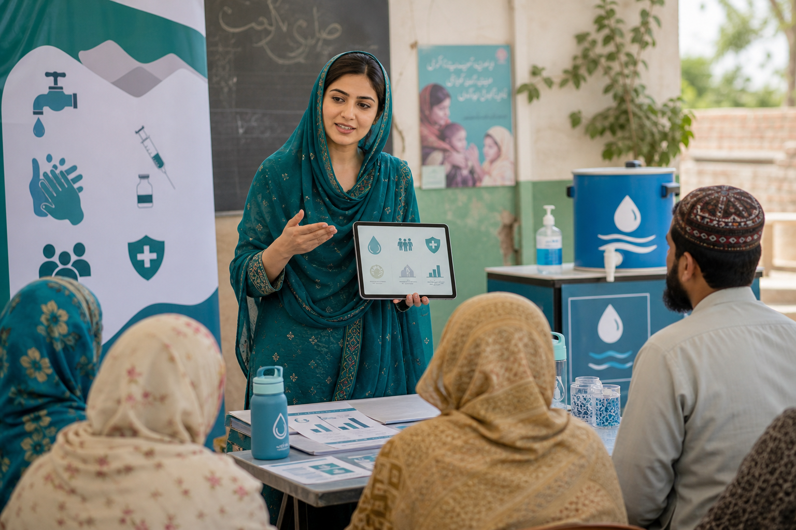

MPH
وبائی امراض کیسے پھیلتے ہیں؟
6:42
How outbreaks spread in a community
Simple Urdu explanation of transmission, prevention, and what families can do early.
Mastering Essentials is the home for clear short videos in Urdu, including Mastering MPH in Urdu and Mastering MHAMBA in Urdu.
نئی اردو ویڈیوز
Simple Urdu explanation of transmission, prevention, and what families can do early.
A practical first look at revenue, costs, staffing, supplies, and service planning.
Rates, risks, and comparisons explained for public-health learners and families.
How managers communicate, make decisions, and build stronger healthcare teams.
Mastering MPH in Urdu
This path keeps the original health mission strong: clean explanations of disease prevention, epidemiology, statistics, health systems, environmental health, and public-health policy.

Mastering MHAMBA in Urdu
MHAMBA broadens the brand beyond health education into how health organizations work: management, accounting, finance, marketing, HR, operations, strategy, and leadership.
موضوعات
Epidemics, prevention, vaccination, screening, sanitation, and community programs.
Hospitals, insurance, access, quality, policy, and patient-centered care.
Operations, planning, teams, service lines, projects, and performance improvement.
Budgets, costs, billing, revenue, accounting logic, and resource decisions.
Patient communication, service positioning, staffing, culture, and workforce issues.
Strategy, ethics, decision making, communication, and change in health organizations.
Teaching standard
Focused lessons designed for YouTube and social platforms without losing substance.
English terms are translated, unpacked, and connected to real South Asian context.
Hospital, community, finance, and management examples make abstract concepts usable.
Health topics stay calm, evidence-aware, and careful about what education can and cannot do.
عوامی صحت کی سمجھ بھی، اور ہیلتھ کیئر لیڈرشپ کی مہارت بھی۔
Build the Urdu learning library around public health knowledge and healthcare leadership skills.
Subscribe on YouTube